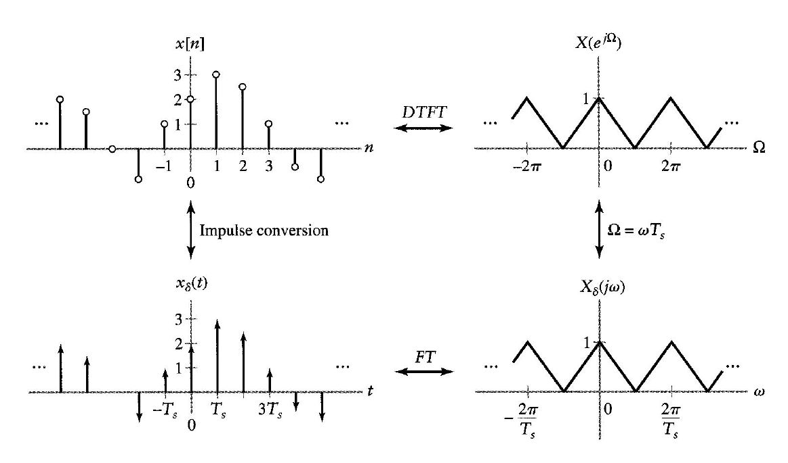
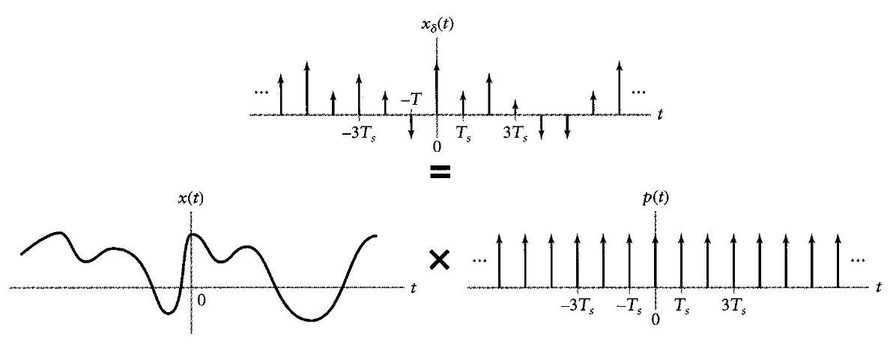
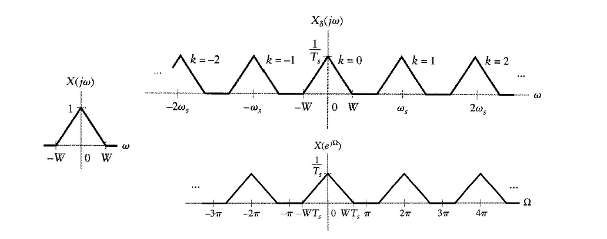
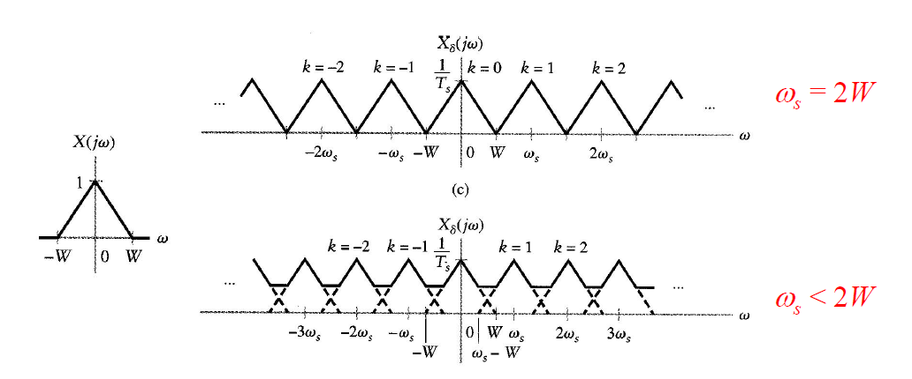

訊號與系統
課程名稱：訊號與系統 (Signals and Systems)
授課教師：蔡尚澕
開課單位：電資共同
教科書：Signals and Systems (2nd Edition)
傅立葉轉換入門
什麼是傅立葉轉換？
- But what is the Fourier Transform? A visual introduction.
傅立葉轉換公式推導
- 工程數學三 7-2 傅立葉指數轉換式
傅立葉表示法對混合信號的應用
Relating FT to DTFT
考慮如何將 discrete-time signal 和 continuous-time signal 做轉換，在這邊從 discrete-time signal 推回去 continuous-time signal，整體的流程：
- discrete-time signal 轉成 temp signal (過度訊號)
- temp signal 轉成 continuous-time signal
離散訊號轉為過度訊號
complex sinusoids:
- continuous-time: x(t)=ejwt
- discrete-time: g[n]=ejΩn
DTFT
在之前就已經知道，對任意 discrete-time signal x[n] 做 DTFT：χ(ejΩ)=∑n=−∞∞x[n]e−jΩn
取樣
每隔 Ts 時間間隔去取樣 continuous 的訊號，假設 x[n] 等於取樣過後的 x(t):
- x(nTs)=x[n]⇒t=nTs
- ejΩn=ejwt⇒ejΩn=ejwTsn⇒Ω=wTs
將 Ω=wTs 帶入公式：χ(ejΩ)∣Ω=wTs=∑n=−∞∞x[n]e−jwTsn，我們稱這個頻域的訊號叫過度訊號：χδ(jw)
FT
過渡訊號 χδ(jw) 在時域的表示可以用逆傅立葉轉換得到，且因為有 linearity 的性質，所以可以看成：
xδ(t)=F−1{χδ(jw)}=F−1{n=−∞∑∞x[n]e−jwTsn}=n=−∞∑∞x[n]F−1{e−jwTsn}
由之前的結論：
δ(t)FT1δ(t−t0)FTe−jwt0
上面的 Tsn 可以看成一個 time shift t0，於是就可以得到：
xδ(t)=n=−∞∑∞x[n]δ(t−nTs)
觀察 delta function 後可以發現，xδ(t) 就是 continuous-time 的 x[n] 表示法，在非 nTs 的地方都為 0，而它的 fourier transform pair 是：
χδ(jω)=n=−∞∑∞x[n]e−jwTsn
圖例

原先為左上方的 Kronecker delta (discrete-time)，透過 DTFT、取樣、FT 後轉成 Dirac delta (continuous-time)，即為過度訊號
過度訊號轉為連續訊號
Sampling (Time)
xδ(t)=n=−∞∑∞x[n]δ(t−nTs)x[n]=x(nTs)xδ(t)=n=−∞∑∞x(nTs)δ(t−nTs)t=nTsxδ(t)=n=−∞∑∞x(t)δ(t−nTs)⇒xδ(t)=x(t)n=−∞∑∞δ(t−nTs)⇒xδ(t)=x(t)p(t)wherep(t)=n=−∞∑∞δ(t−nTs)
由 p(t) 的式子可以觀察到它是一個 impulse train，且由推導可以知道 p(t) 是用來關聯 x(t) 與 xδ(t) 的關係式，透過 p(t) 及的式子可以從 x(t) 得到 xδ(t)，再由前面推導的過度訊號轉換成離散訊號即可達成 sampling 的目的
圖例 (Time)

xδ(t) 為 x(t) 與 p(t) 的 time-domain 做相乘而得
Sampling (Frequency)
在時域做相乘等於在頻域做convolution
χδ(jw)=2π1χ(jw)∗P(jw)
對 impulse train P(jw) 做 FT 仍然是 impulse train (詳見前面)，sample frequency ws=2π/Ts：
χδ(jw)=2π1χ(jw)∗Ts2πk=−∞∑∞δ(w−kws)
因為 convolution delta function 所以可以簡單地知道結果：
χδ(jw)=Ts1k=−∞∑∞χ(jw−jkws)
圖例 (frequency)

對 sample 後的訊號做 FT 的結果(過度訊號)是將原訊號複製無限多份，且強度變為 1/Ts (右上圖)
對 sample 後的訊號做 DTFT 的結果，可以透過 x[n]DTFTχ(ejΩ)=χδ(jw)∣w=Ω/Ts 得到 (右下圖)
time: discrete、frequency: periodic，可以用 sampling 來理解
∵Ω=wsTs=2πfsTs=2πTs1Ts，固定每 2π 為一週期所以是 periodic
Sampling Aliasing
ws=2π/Ts 當 Ts 提升時會使 ws 下降，當 ws<2W 時會產生 overlap。

當取樣 overlap 時即無法再還原回原訊號，因此取樣頻率要足夠高。
取樣頻率也不可過大，原先 1MHz 即可取的用 100MHz 來取，代表多取了 100 倍的點，複雜度上升，所需記憶體也上升